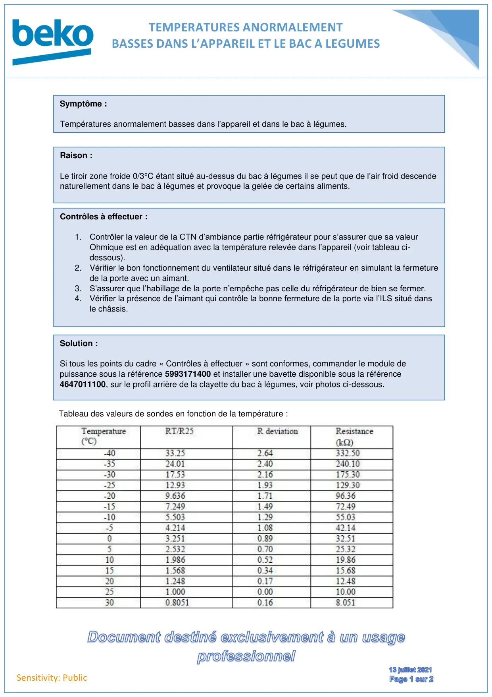
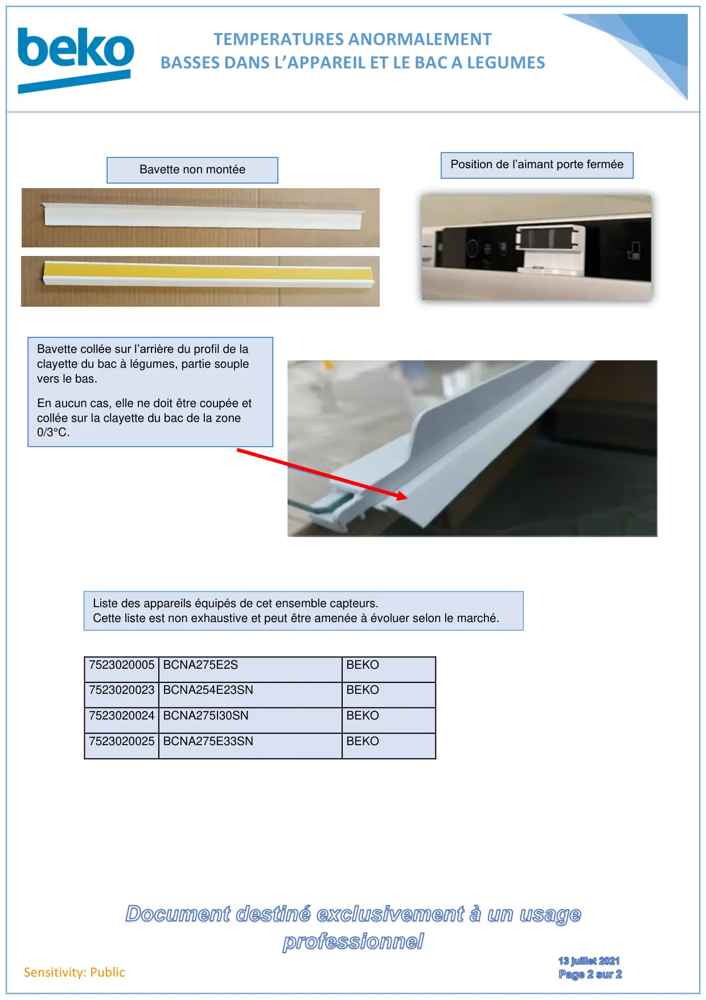

Températures anormalement basses BCNA275E33SN

TEMPERATURES ANORMALEMENTBASSES DANS L’APPAREIL ET LE BAC A LEGUMESSensitivity: PublicTableau des valeurs de sondes en fonction de la température :Symptôme :Températures anormalement basses dans l’appareil et dans le bac à légumes.Raison :Le tiroir zone froide 0/3°C étant situé au-dessus du bac à légumes il se peut que de l’air froid descendenaturellement dans le bac à légumes et provoque la gelée de certains aliments.Contrôles à effectuer :1. Contrôler la valeur de la CTN d’ambiance partie réfrigérateur pour s’assurer que sa valeurOhmique est en adéquation avec la température relevée dans l’appareil (voir tableau ci-dessous).2. Vérifier le bon fonctionnement du ventilateur situé dans le réfrigérateur en simulant la fermeturede la porte avec un aimant.3. S’assurer que l’habillage de la porte n’empêche pas celle du réfrigérateur de bien se fermer.4. Vérifier la présence de l’aimant qui contrôle la bonne fermeture de la porte via l’ILS situé dansle châssis.Solution :Si tous les points du cadre « Contrôles à effectuer » sont conformes, commander le module depuissance sous la référence 5993171400 et installer une bavette disponible sous la référence4647011100, sur le profil arrière de la clayette du bac à légumes, voir photos ci-dessous.
1 / 2
TEMPERATURES ANORMALEMENTBASSES DANS L’APPAREIL ET LE BAC A LEGUMESSensitivity: Public7523020005 BCNA275E2SBEKO7523020023 BCNA254E23SNBEKO7523020024 BCNA275I30SNBEKO7523020025 BCNA275E33SNBEKOBavette collée sur l’arrière du profil de laclayette du bac à légumes, partie souplevers le bas.En aucun cas, elle ne doit être coupée etcollée sur la clayette du bac de la zone0/3°C.Bavette non montéePosition de l’aimant porte ferméeListe des appareils équipés de cet ensemble capteurs.Cette liste est non exhaustive et peut être amenée à évoluer selon le marché.
2 / 2